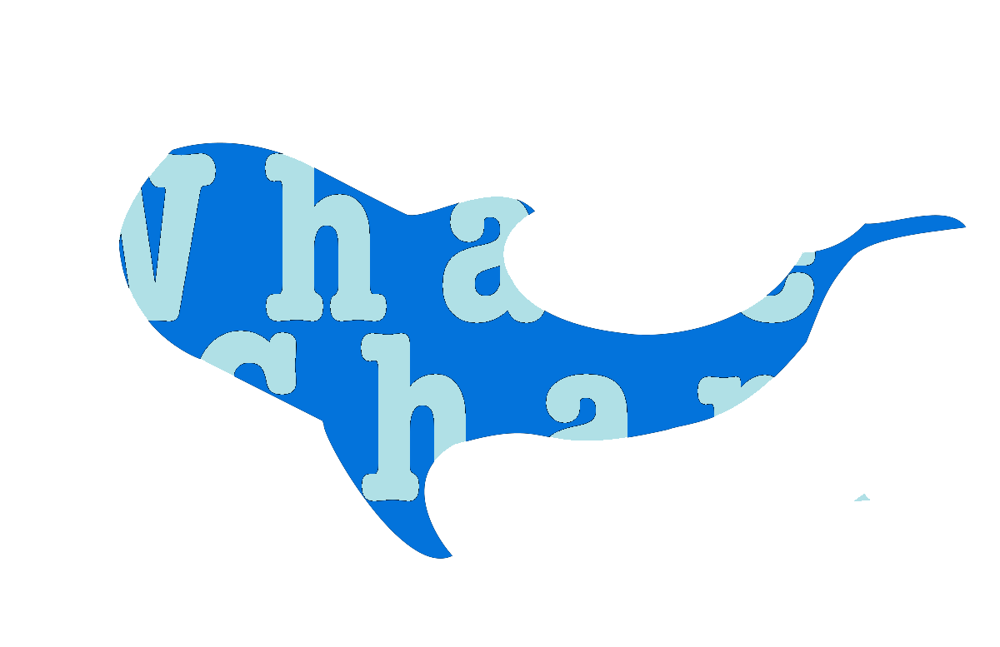

Whale Shark is an asset allocation strategy for developing sustainable low-risk web properties
What an opportunity it is to write an update and not an article. The joys of infancy. As of today, with a total investment of $575, the whale shark project is generating 83 cents a month in revenue. It takes $0 to run. So far, so good. The best part is that the investment is in crypto assets that can be liquidated quickly and easily. As of today, this project can be abandoned for zero loss. Minuscule? Crypto? If this sounds pointless and risky, then you more than anyone should stay tuned.
On this the 17th of May in the horrible year of 2020 I embark into the oceans of finance to study an entity of sustainability and effeciency. The beatiful whale shark project awaits in the unknown depths of economics.
About The Project
2020 Xreddr